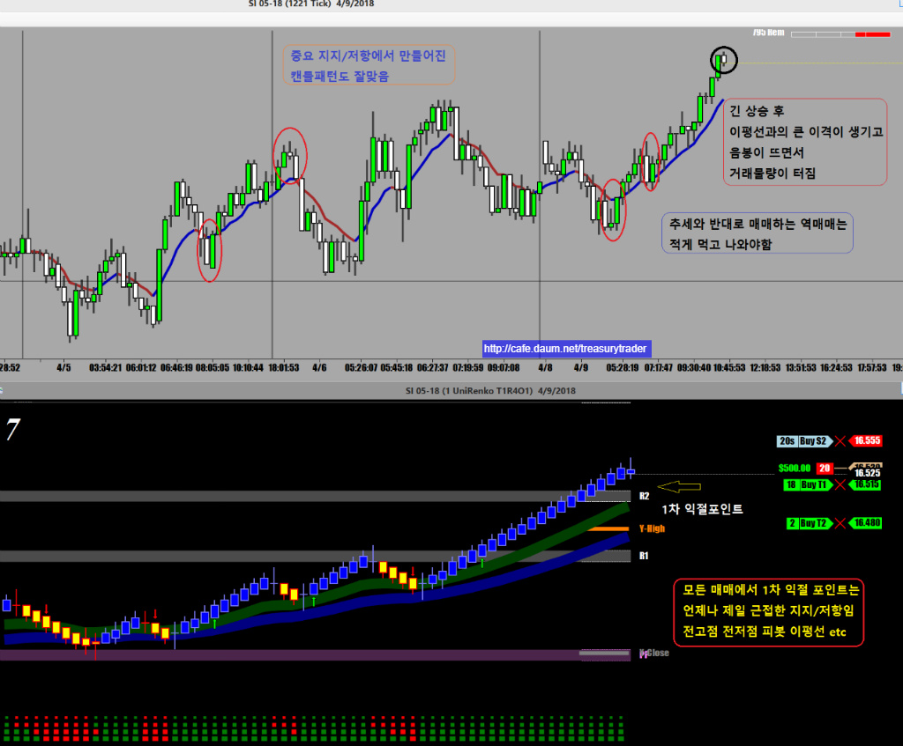
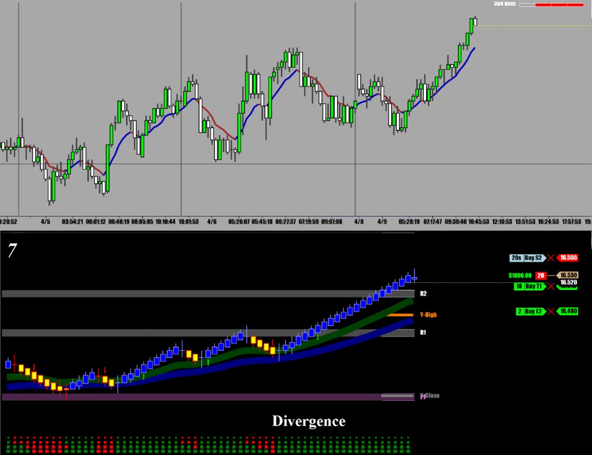
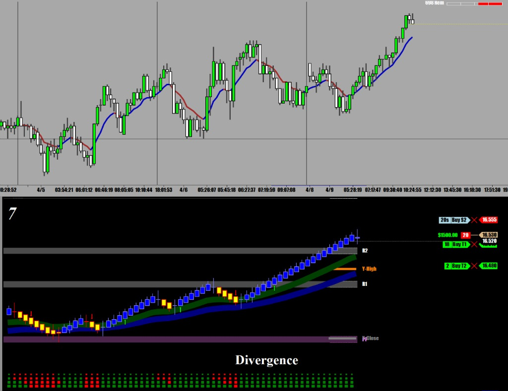
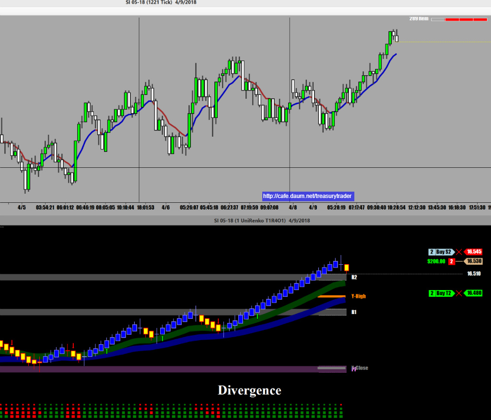
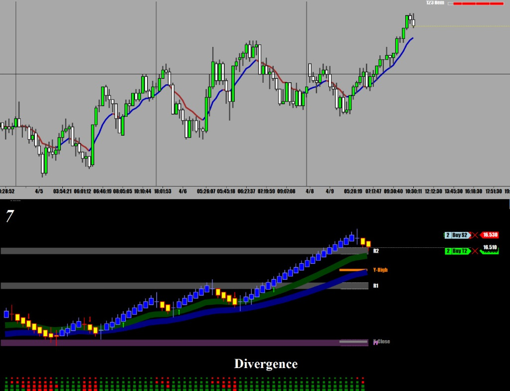
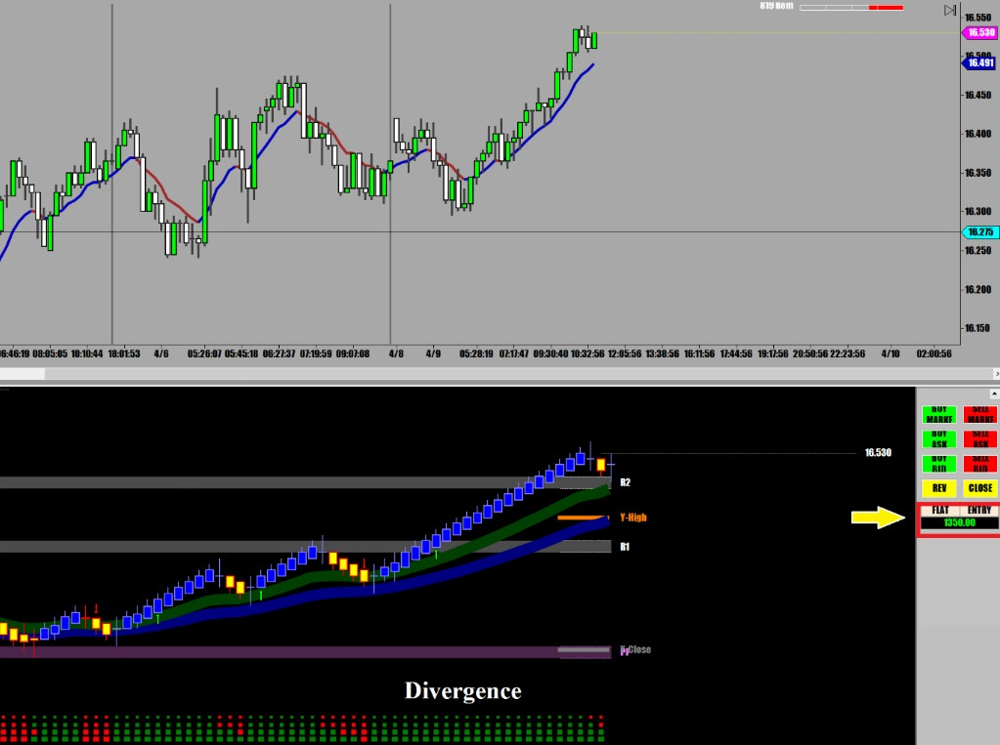
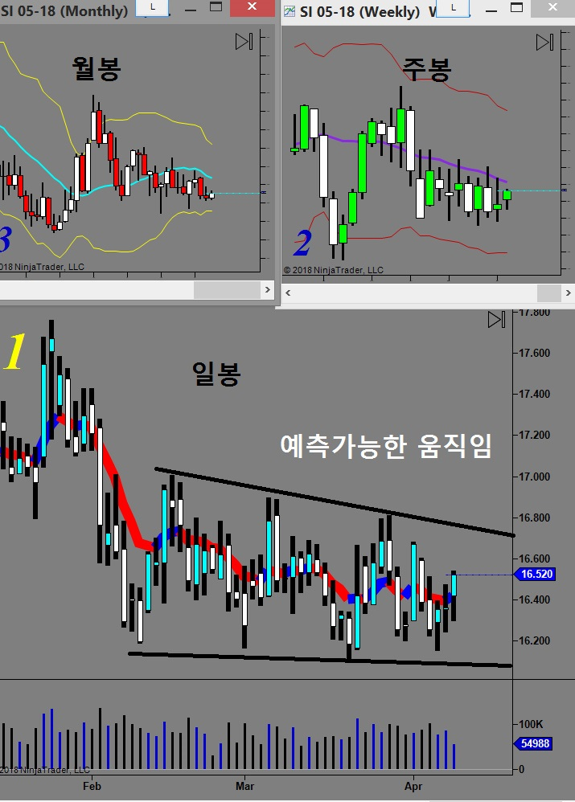

오늘은 오랫만에 Silver(SI)를 매매
2010년부터 2012년말까지 실버는 금과 더불어 정말 돈버는 선물이었는데 어느덧 좋던 시절은 지나가고
지금은 그냥 조용히 움직이는 시골 선물임
보통 Precious Metal은 증시나 달러화 경제지표등에 영향을 받지만
실버는 대체로 다른 재료에 매우 둔감한 자체적으로 움직이는 변방의 선물임
실버를 매매할 땐 금과 움직이는 방향이 비슷해서 금챠트를 같이 띄워놓고 참고로 하면서 매매하면 좋다.
금은 매매량도 많고 움직임이 커서 작은 움직임을 따라하면 안되고 현재추세같은 큰 흐름만 보면 된다
오늘은 다른일 보느라 늦게 시작해서 역매매 한번하고 지금은 기다리는 중
역매매는 반드시 긴 추세후에 피봇의 주요 지지/저항이라든지 강력한 이평선 맞고 주춤하면서 물량 터질 때
들어가야하며 손절은 물론 직전고점임
숙달되지 않은 분들은 가능하면 역매매는 하지 않는게 원칙임
중요한 포인트에서 만들어진 캔들패턴은(빨간 동그라미) 좋은 매매신호가 된다




1차 익절 후 뒤에 있던 손절을 오늘 매수가로 옮김
그러나 예상대로 강려크한 지지선 피봇 R2 에서 곧바로 반등 손절 걸림

오늘도 증시는 널을 뛰는 중이라 오후장에 증시 떡락할 때 좀 움직임이 있을것 같아서
일단은 좀 더 지켜보다가 챤스오면 들어갈 예정임

실버는 금과 연동하는 경우가 많아서 금의 움직임을 참고하면서 같이 매매하면 많은 도움이 된다
하지만 100% 같지는 않기 때문에 금이 움직인다고 무조건 따라 지르면 안됨
참고만 해야 함
실버는 틱당 25불을 주기 때문에 손절도 국채처럼 4틱
1차 익절은 2틱이나 3틱으로 나머지 잔량은 Runner로 띄워보내면서
직전캔들끝으로 손절을 맟주면서 계속 따라붙는 방법으로 매매
아래 보는것처럼 실버는 움직임이 예측이 가능한 범위내에서 움직이기 때문에
일봉을 보면 오늘의 방향을 어느 정도까지는 예측할 수 있다
인덱스선물이나 크루드처럼 에측하기가 매우 어려운 선물들에 비해
그나마 매매가 수월하다
움직임도 느려서 이거저거 따져보기 충분한 시간적 여유도 있다
주로 미국서부시간 5시30분부터 큰 움직임이 만들어지기 때문에 그때부터 2시간 정도 매매하면 된다
위에 올려놓은 챠트중에 1221 Tick 챠트는 큰 그림을 볼 수 있고
10일 이동평균선(EMA)을 기준으로 위쪽에 있으면 상승으로 아래쪽에 있으면 하락으로 매매하면 되고
장중에 중요 지지(저항)에서 나타나는 캔들 패턴중에 (모닝스타(아침별) 엔걸핑(장악형) 패턴은
매우 믿을만한 신호가 된다
모든 패턴이 다 믿을만한게 아니라 반드시 중요한 지점에서 생기는 패턴만 믿어야 한다
